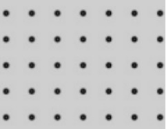
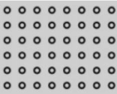
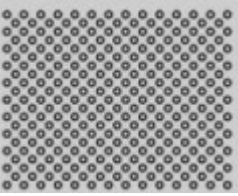
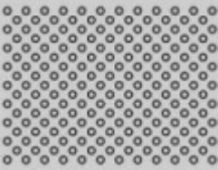
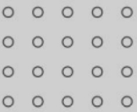

Підвісні стелі «Geipel»
Один із видів підвісних стель - касетна стеля. Стелі цього типу виробництва фірми Geipel - вдале поєднання функціональності, якості та краси. Вони володіють усіма необхідними характеристиками, зокрема вологостійкістю і пожежною безпекою, а крім того, мають стильний і сучасний вигляд. Серед касетних стель виділяються стелі з дзеркальним покриттям, за допомогою яких можна візуально збільшити об'єм кімнати, водночас такі стелі підходять для вологого прибирання і безпечні для здоров'я. Встановити дзеркальну стелю можна в приміщенні будь-якого типу, чи то житловий будинок, чи то офісна будівля, установа медичного або навчального призначення.
Модульна конструкція стелі Geipel передбачає легкий і зручний монтаж навіть у приміщеннях з великою площею стель, і, що особливо важливо, просту заміну стелі без заміни самої системи - наприклад, якщо касети зазнали якихось пошкоджень. Природно, це дасть змогу уникнути зайвих витрат.
Який вигляд має касетна стеля Geipel?
Кожна касета - це панель з алюмінію або оцинкованої сталі, що має квадратну форму. Незважаючи на те, що можливе замовлення касет практично будь-якого кольору, стандартні колірні рішення - це білий, дзеркальні срібний і золотий, срібний «металік». Покриття касет здійснюється за допомогою якісних фарб, стійкість яких перед вологим або іншим агресивним середовищем дає змогу їм тривалий час залишатися в прекрасному стані. Надійні матеріали здатні витримувати монтаж і демонтаж неодноразово, зберігаючи при цьому свій первісний вигляд. Можливі також додаткові характеристики касет для приміщень з особливими вимогами, наприклад, підвищена вентиляційна здатність досягається за допомогою перфорації, а для поліпшення акустики застосовується мінеральне скловолокно. Також за бажанням замовника в касетах можуть бути присутніми вирізи різних форм для спеціального обладнання - труб, світильників, гучномовців тощо.
Види перфорацій касетної стелі
|  |
|
|  |
|
|  |
|
|  |
|
|  |
|
Переваги касетної стелі Geipel
Рівень якості
Для виробництва підвісних касетних стель Geipel використовують високоякісні метали - оцинковану сталь і алюміній.
Товщину металу, яка забезпечує найкращі експлуатаційні властивості касетних стель, визначають за допомогою складних інженерних розрахунків.
Поверхні касет у процесі виготовлення надають ідеальної гладкості, що робить стелю особливо функціональною і, звісно, стильною та красивою.
Міцність і надійність
- Для виробництва касет Geipel використовується метал, захищений від корозії і здатний витримувати вплив агресивного середовища, тому стелі Geipel служать протягом багатьох років.
- Колір касет зберігається протягом усього терміну експлуатації, тому що порошкове покриття, яке наносять на них, стійке до пошкоджень і впливу ультрафіолетових променів.
- Касети Geipel з білим покриттям здатні знижувати енерговитрати за рахунок того, що їхня поверхня може розсіювати і відбивати світло, стаючи додатковим джерелом світла.